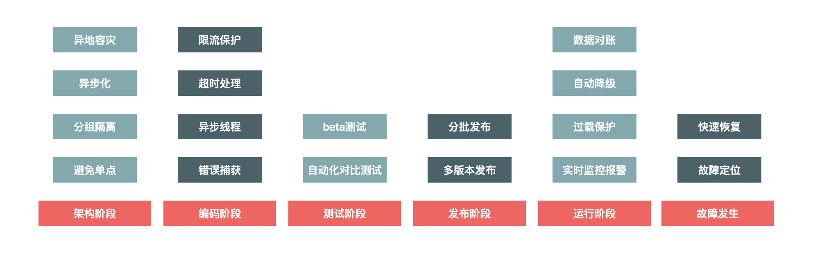

07 准备Plan B：如何设计兜底方案_
这是《如何设计一个秒杀系统》专栏的最后一篇文章，前面我们一起看了很多极致的优化思路，以及架构的优化方案。但是很遗憾，现实中总难免会发生一些这样或者那样的意外，而这些看似不经意的意外，却可能带来非常严重的后果。
我想对于很多秒杀系统而言，在诸如双十一这样的大流量的迅猛冲击下，都曾经或多或少发生过宕机的情况。当一个系统面临持续的大流量时，它其实很难单靠自身调整来恢复状态，你必须等待流量自然下降或者人为地把流量切走才行，这无疑会严重影响用户的购物体验。
同时，你也要知道，没有人能够提前预估所有情况，意外无法避免。那么，我们是不是就没办法了呢？当然不是，我们可以在系统达到不可用状态之前就做好流量限制，防止最坏情况的发生。用现在流行的话来说，任何一个系统，都需要“反脆弱”。
具体到秒杀这一场景下，为了保证系统的高可用，我们必须设计一个Plan B方案来兜底，这样在最坏情况发生时我们仍然能够从容应对。今天，我们就来看下兜底方案设计的一些具体思路。
高可用建设应该从哪里着手
说到系统的高可用建设，它其实是一个系统工程，需要考虑到系统建设的各个阶段，也就是说它其实贯穿了系统建设的整个生命周期，如下图所示：

图1 高可用系统建设
具体来说，系统的高可用建设涉及架构阶段、编码阶段、测试阶段、发布阶段、运行阶段，以及故障发生时。接下来，我们分别看一下。
- 架构阶段：架构阶段主要考虑系统的可扩展性和容错性，要避免系统出现单点问题。例如多机房单元化部署，即使某个城市的某个机房出现整体故障，仍然不会影响整体网站的运转。
- 编码阶段：编码最重要的是保证代码的健壮性，例如涉及远程调用问题时，要设置合理的超时退出机制，防止被其他系统拖垮，也要对调用的返回结果集有预期，防止返回的结果超出程序处理范围，最常见的做法就是对错误异常进行捕获，对无法预料的错误要有默认处理结果。
- 测试阶段：测试主要是保证测试用例的覆盖度，保证最坏情况发生时，我们也有相应的处理流程。
- 发布阶段：发布时也有一些地方需要注意，因为发布时最容易出现错误，因此要有紧急的回滚机制。
- 运行阶段：运行时是系统的常态，系统大部分时间都会处于运行态，运行态最重要的是对系统的监控要准确及时，发现问题能够准确报警并且报警数据要准确详细，以便于排查问题。
- 故障发生：故障发生时首先最重要的就是及时止损，例如由于程序问题导致商品价格错误，那就要及时下架商品或者关闭购买链接，防止造成重大资产损失。然后就是要能够及时恢复服务，并定位原因解决问题。
为什么系统的高可用建设要放到整个生命周期中全面考虑？因为我们在每个环节中都可能犯错，而有些环节犯的错，你在后面是无法弥补的。例如在架构阶段，你没有消除单点问题，那么系统上线后，遇到突发流量把单点给挂了，你就只能干瞪眼，有时候想加机器都加不进去。所以高可用建设是一个系统工程，必须在每个环节都做好。
那么针对秒杀系统，我们重点介绍在遇到大流量时，应该从哪些方面来保障系统的稳定运行，所以更多的是看如何针对运行阶段进行处理，这就引出了接下来的内容：降级、限流和拒绝服务。
降级
所谓“降级”，就是当系统的容量达到一定程度时，限制或者关闭系统的某些非核心功能，从而把有限的资源保留给更核心的业务。它是一个有目的、有计划的执行过程，所以对降级我们一般需要有一套预案来配合执行。如果我们把它系统化，就可以通过预案系统和开关系统来实现降级。
降级方案可以这样设计：当秒杀流量达到5w/s时，把成交记录的获取从展示20条降级到只展示5条。“从20改到5”这个操作由一个开关来实现，也就是设置一个能够从开关系统动态获取的系统参数。
这里，我给出开关系统的示意图。它分为两部分，一部分是开关控制台，它保存了开关的具体配置信息，以及具体执行开关所对应的机器列表；另一部分是执行下发开关数据的Agent，主要任务就是保证开关被正确执行，即使系统重启后也会生效。
图2 开关系统
执行降级无疑是在系统性能和用户体验之间选择了前者，降级后肯定会影响一部分用户的体验，例如在双11零点时，如果优惠券系统扛不住，可能会临时降级商品详情的优惠信息展示，把有限的系统资源用在保障交易系统正确展示优惠信息上，即保障用户真正下单时的价格是正确的。所以降级的核心目标是牺牲次要的功能和用户体验来保证核心业务流程的稳定，是一个不得已而为之的举措。
限流
如果说降级是牺牲了一部分次要的功能和用户的体验效果，那么限流就是更极端的一种保护措施了。限流就是当系统容量达到瓶颈时，我们需要通过限制一部分流量来保护系统，并做到既可以人工执行开关，也支持自动化保护的措施。
这里，我同样给出了限流系统的示意图。总体来说，限流既可以是在客户端限流，也可以是在服务端限流。此外，限流的实现方式既要支持URL以及方法级别的限流，也要支持基于QPS和线程的限流。
首先，我以内部的系统调用为例，来分别说下客户端限流和服务端限流的优缺点。
- 客户端限流，好处可以限制请求的发出，通过减少发出无用请求从而减少对系统的消耗。缺点就是当客户端比较分散时，没法设置合理的限流阈值：如果阈值设的太小，会导致服务端没有达到瓶颈时客户端已经被限制；而如果设的太大，则起不到限制的作用。
- 服务端限流，好处是可以根据服务端的性能设置合理的阈值，而缺点就是被限制的请求都是无效的请求，处理这些无效的请求本身也会消耗服务器资源。
图3 限流系统
在限流的实现手段上来讲，基于QPS和线程数的限流应用最多，最大QPS很容易通过压测提前获取，例如我们的系统最高支持1w QPS时，可以设置8000来进行限流保护。线程数限流在客户端比较有效，例如在远程调用时我们设置连接池的线程数，超出这个并发线程请求，就将线程进行排队或者直接超时丢弃。
限流无疑会影响用户的正常请求，所以必然会导致一部分用户请求失败，因此在系统处理这种异常时一定要设置超时时间，防止因被限流的请求不能fast fail（快速失败）而拖垮系统。
拒绝服务
如果限流还不能解决问题，最后一招就是直接拒绝服务了。
当系统负载达到一定阈值时，例如CPU使用率达到90%或者系统load值达到2*CPU核数时，系统直接拒绝所有请求，这种方式是最暴力但也最有效的系统保护方式。例如秒杀系统，我们在如下几个环节设计过载保护：
在最前端的Nginx上设置过载保护，当机器负载达到某个值时直接拒绝HTTP请求并返回503错误码，在Java层同样也可以设计过载保护。
拒绝服务可以说是一种不得已的兜底方案，用以防止最坏情况发生，防止因把服务器压跨而长时间彻底无法提供服务。像这种系统过载保护虽然在过载时无法提供服务，但是系统仍然可以运作，当负载下降时又很容易恢复，所以每个系统和每个环节都应该设置这个兜底方案，对系统做最坏情况下的保护。
总结一下
网站的高可用建设是基础，可以说要深入到各个环节，更要长期规划并进行体系化建设，要在预防（建立常态的压力体系，例如上线前的单机压测到上线后的全链路压测）、管控（做好线上运行时的降级、限流和兜底保护）、监控（建立性能基线来记录性能的变化趋势以及线上机器的负载报警体系，发现问题及时预警）和恢复体系（遇到故障要及时止损，并提供快速的数据订正工具等）等这些地方加强建设，每一个环节可能都有很多事情要做。
另外，要保证高可用建设的落实，你不仅要做系统建设，还要在组织上做好保障。高可用其实就是在说“稳定性”。稳定性是一个平时不重要，但真出了问题就会要命的事儿，所以很可能平时业务发展良好，稳定性建设就会给业务让路，相关的稳定性负责人员平时根本得不到重视，一旦遇到故障却又成了“背锅侠”。
而要防止出现这种情况，就必须在组织上有所保障，例如可以让业务负责人背上稳定性KPI考核指标，然后在技术部门中建立稳定性建设小组，小组成员由每个业务线的核心力量兼任，他们的KPI由稳定性负责人来打分，这样稳定性小组就可以把一些体系化的建设任务落实到具体的业务系统中了。
最后，欢迎你在留言区和我交流，你也可以说说在实际工作中，还有哪些关于系统稳定性建设方面有更好的思路或者方案，我们一起沟通探讨。
© 2019 - 2023 Liangliang Lee. Powered by gin and hexo-theme-book.